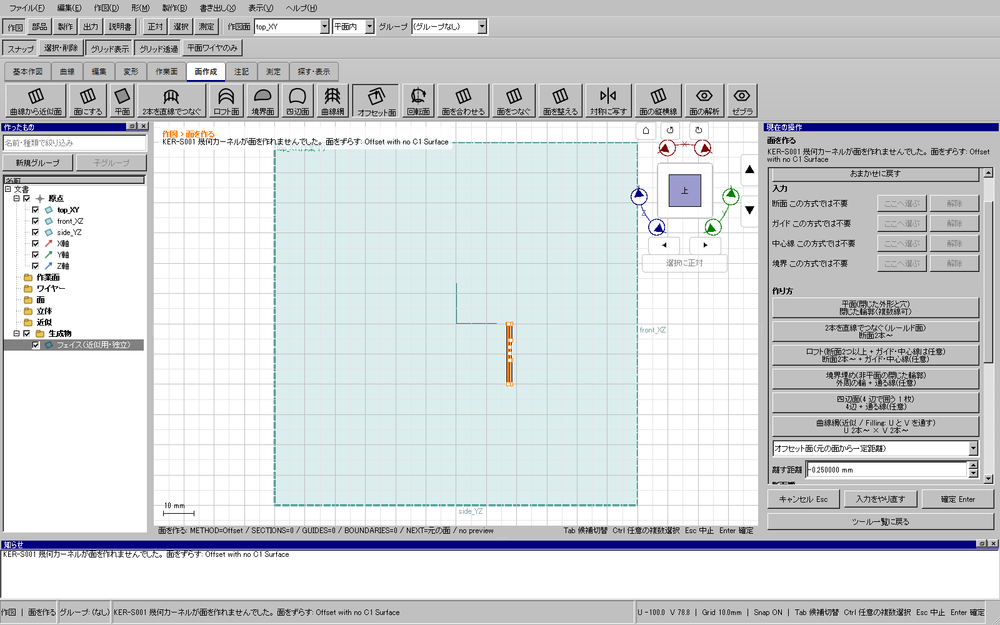
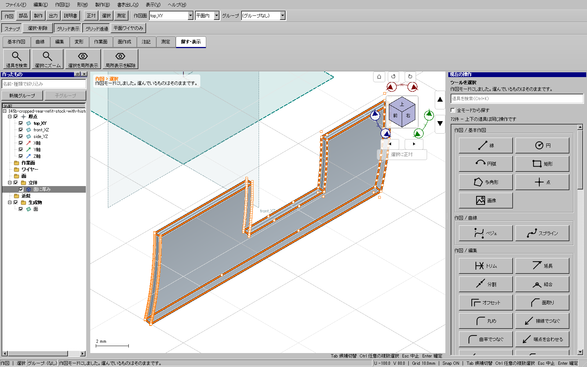

2026-11-09。WP-06の既存SurfaceRefitとOffsetの非公開な支持範囲処理・対応回帰だけを修正した。重点試験と全体・配布版検証が成功し、61e958af5の更新6を公開した。115系の全製作モデルと型紙、実際の工作は未完了。
添付由来の車体裾部を通常の平面分割で前方の回り込みと側面に分け、側面の外面を選んで取り出した。この保存面を「面を整える」で処理しても制御点を減らせず、直接オフセットしても「Offset with no C1 Surface」で失敗した。元モデルと失敗時の操作を保全した。車体幅36 mmと外形を維持し、拡大縮小は行っていない。

切り取った面の範囲外にも、元のB-spline支持面の折れが残っていた。元の支持面全体の連続性を使うと、滑らかな使用範囲まで拒否される。ノット挿入で使用範囲に必要な支持面だけを取り出し、同じパラメーターの切断境界をコピーして保持する。面の形を別の平面や専用の鉄道形状で置き換えない。
最初の候補は単純な回帰例では成功したが、添付の面では支持範囲の端に約3.6×10−15の丸め差があり失敗した。修正では、実境界を動かさず、使用範囲全体を含み元の支持範囲内にあるコピーだけを認める。許容差を広げず、境界と穴・向き・元データを保持する。使用範囲内に本当の折れがある場合や、不正な境界は引き続き拒否する。周期面に新しい継ぎ目を作らず、既存の点数上限と公開API・保存形式を変えない。
| 項目 | 結果 |
|---|---|
| コア回帰 | 追加例は修正前に失敗し、修正後は全19件が成功。多項式・有理B-spline、境界と既存ノットの微小差、2穴、回転・反転、直接/整形後のオフセットと元データ不変を検査。使用範囲内の折れは拒否する。 |
| 関連UI | HP-SEで選択切替・取消・履歴・棚更新を含む10件が成功。追加した通常入力の経路では、面を整える→Undo/Redo→元面を直接オフセット→厚み→保存再読込が成功した。 |
| 同じ保存面からの実操作344c/345b | 直接オフセット、および整形→オフセット→面の形から展開→型紙3形式→中央0.5 mm厚み→保存/Undo/Redo→独立KCD2/STEP出力が成功。元ファイルを保全。 |
| 整形 | 制御点371→36。偏差の上限は表示値0.000008 mm（許容0.01 mm）。独立した有限標本の双方向最大距離は約0.000002489 mm。有限標本を全域の解析的証明とは呼ばない。 |
| 部品と型紙 | 厚み部品は有効な1ソリッド、10フェイス、体積約57.135854 mm³。扉の切り欠きを保持。型紙は7.0068×20.0004 mm、閉輪郭1個。SVG/DXFの有限標本差は約0.000055 mm、SVG/PDFは約0.000217 mm。 |

証拠はout/series115-plaboard-20261105/以下の343b-near-knot-before.txt、343b-near-knot-after.txt、cropped-support-surface-edit-ui-b-20261109、actual-cropped-support-b-after-20261109-*、346-cropped-support-native-proof.jsonと2組のcut-proofに保存。診断で作った形状をCADへ読み戻して模型を置き換えることは行っていない。
最初の全体入口は、追加した自己試験でQWidgetの直接includeが足りないことを事前構造検査が検出し停止した。直接includeを追加して、新しいrunで全体検証を行い成功した。失敗証拠はactive-support-release-20261109に保全した。
事前9件、CTest197件（skip0）、開発/配布UI各722件、通常Windows起動・従来自己試験が成功。正式publish後、GitHubの対象コミット・最新タグ・ZIPサイズ/SHA256も一致した。全体証拠: out/verification/active-support-release-b-20261109/result.json。検証済みの更新6。最終候補の実UI344d/345cも成功し、測定した4形状とnativeバイト列が一致した。車体全体の製作近似・全型紙と実工作は継続する。